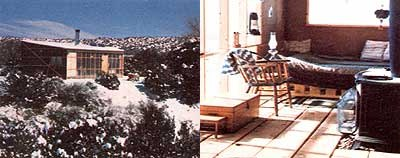
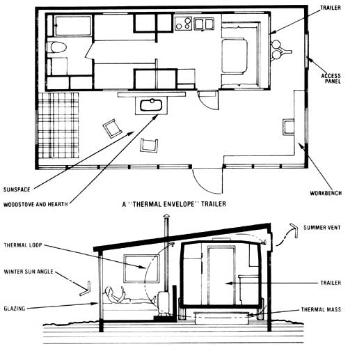

While constructing their house, this ingenious couple found a way to expand the living space in their camper and recruited the sun to help heat it . . . all for less than $1, 000!
Like a lot of folks who set out to build their own homes, my partner and I decided to park a mobile trailer on our property (a remote site in northern New Mexico) and use it for shelter until our permanent abode was completed. The advantages of using such a ready-made dwelling are many ("instant" plumbing, a built-in kitchen, a watertight roof, and the like) . . . but so, unfortunately, are the disadvantages. Not the least of these is a form of domestic claustrophobia with the main symptom best characterized as "If I'm stuck in this box another week, I'll go crazy!"
Some people, in fact, succumb to "trailer twitch" by prematurely moving into their still-under-construction homes or (what's even worse) by taking shortcuts to finish their houses quickly. I'm happy to report, though, that there's a much better solution to the problem . . . one that has allowed us to live in relatively roomy (and inexpensive) comfort while building our home exactly as we want it at a sensible pace. The secret? An insulated, sun-catching, heat-retaining "solar envelope" built around our trailer!
Actually, the structure is little more than a frame shed that has its south-facing wall glazed with plastic film to admit sunlight. It can't really compare with the much more costly and complex double-envelope solar homes that are designed for permanent residency. This design (the brainchild of architect John P. Friedman of Los Lunas, New Mexico) is intended specifically for low-cost, temporary quarters. Consequently, it's ideal for owner-builders in our situation . . . or for hunters or vacationers who simply want a bit more elbowroom (and warmth) while living in their trailers. One of the design's strongest assets, in fact, is that an end can be built to be removable-or even to swing open like a giant double door-so that you can drive or tow your camper out with ease. In our case, however, we knew that the only occasion we'd have to open the wall would be when it came time to return our rented unit to its owners, so we erected a more or less "standard" end panel. Once the camper's gone, we'll simply reattach the partition and use the envelope as a garage, a studio, or a woodworking shop.
CONSTRUCTION
With our 8' X 24' trailer parked on level ground and situated so that the long side-the one with a door-faced due south, we dug a rectangular 16' X 26' trench, about 9" deep, around the camper . . . and filled the moat with 3" of pea gravel. If you live in a cold region where frost heaving is a problem, you might want to dig a deeper trench and use more gravel (or, for a permanent foundation, you could pour a cement footing). On top of the fill we put up four stud walls, with the south-facing partition measuring 8' high and the northerly one 10'. We framed in areas for windows, too, on the east and west panels . . . and built a small access hatch on the east side near the trailer's hitch, so that we could easily use that otherwise wasted space for storage.
Next, we put up the roof, installing 2 X 6 rafters with a south-to-north pitch of 1 foot for every 8 feet. Then we stapled fiberglass insulation to the east, west, and north walls . . . and nailed tar paper to the outside of the three walls, using furring strips wherever necessary to cover seams and to help anchor the material. Because we didn't intend to install true siding, we also put a board diagonally across each tar-papered wall to serve as a brace.
When we'd done all that, we proceeded to nail corrugated metal roofing to the ceiling beams, insulate the roof, and cover the south wall (minus a full-sized doorway space) with a seamless layer of 6-mil plastic glazing. After that, all we had to do was to tack up glazing over the two windows and install a door. The trailer was then completely enclosed and "in the dry".
AMENITIES
At that point, we'd finished the outside work . . . "elevating" our abode's external appearance from that of a trailer to what looked like a tar-paper shack! The inside of our addition was still bare, though, so we set out to give it the final touches that would make it part of a home.
For starters, we installed rough-cut 1 X 10 flooring in the sunspace, attaching the planks to 2 X 4 joists and leaving an open space in the center of the floor for our Franklin woodstove. We lined that area with pea gravel, placed the heater on top of the rock, and ran an insulated metal chimney from the fixture through the roof (care fully following the flue manufacturer's instructions for safe installation).
Then we built a bed platform-just a bit wider than the double mattress we put on it-against the west wall, and tacked some paneling over the studs at the head of the bed to give us enough "real" wall for hanging pictures and the like (eventually, we may panel all the partitions). Finally, we added a chair and workbench, some throw rugs, a hanging planter, and a few other items . . . and stood back to admire our cozy new living room.
HEAT, HOT WATER, AND ELECTRICITY, TOO!
Our envelope trailer home is exceptionally easy to keep warm. The living space and the camper soak up Btu from the sun, and additional thermal mass (a water-filled metal stock tank set beneath the trailer plus concrete adobe blocks stacked between the woodstove and the camper) stores the heat gained. Consequently, we stay comfortable throughout the cold winter nights with only an occasional boost from our heater . . . while our neighbors burn cord after cord of firewood.
Ventilation is excellent: Warm air from the south wall and the woodstove rises over the trailer, and the cooled air flows back underneath to be heated again. In the summer, we open two vents cut into the top of the north wall to keep the sunspace from becoming overly hot, and the windows on the east and west provide cross breezes.
We pump water into our trailer's 20-gallon tank from a nearby spring, and also store an emergency supply of it in containers under the vehicle. We have plenty of hot water, too, since the trailer's equipped with a propane heater. In fact, once the liquid inside the tank is up to temperature, it stays warm (thanks mostly to the envelope) for several days, with just the pilot burning.
Moreover, since we're two miles from the nearest power line-and getting hooked up to it would cost us a staggering $6,000!-we've installed four photovoltaic panels on the roof. The units provide approximately 800 watt-hours of 12-volt DC electricity each day the sun shines, and we store the energy in two 6-volt golf-cart batteries. The system gives us enough juice for lights in the trailer and sunspace when they're needed . . . and provides current to run our water pump at night, as well as in the day.
IT'S NO MANSION, BUT . . .
I can't say that we're living in the lap of luxury here in our little solar home, but it sure beats the usual cold-in-the-winter, cramped-the-year-round trailer life! Altogether, our heat-grabbing envelope cost somewhere between $600 and $800 (not including, of course, the photovoltaic setup) . . . and we always have the option of dismantling the structure to use the materials for some other project.
Meanwhile, we can spend our time building our permanent house correctly . And, instead of being constantly boxed up against the elements, we're enjoying the natural beauty around us.
|
 |
 |
|